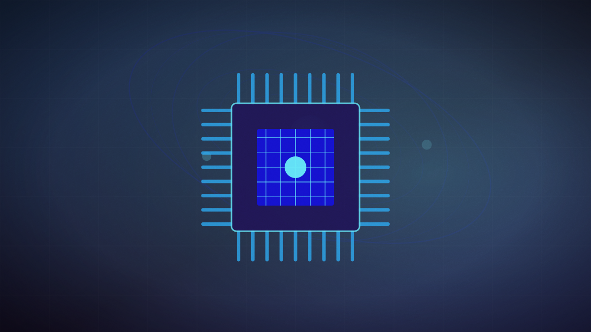

Original illustration · not a photograph of the event
Infrastructure · Single-source report
US seeks answers on Nvidia’s sale of chips to China, Bessent says
South China Morning Post · Publisher report · not fact-checked
Read original report